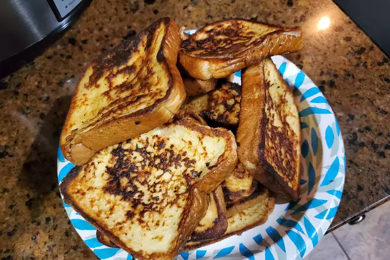

French Toast

Fluffy French Toast
This french toast is light anf fluffy and oh-so satisfying!
Ingredients
- 1/4 cup all-purpose flour
- 1 cup milk
- 3 eggs
- 1 tablespoon white sugar
- 1 teaspoon vanilla extract
- 1/2 teaspoon ground cinnamon
- 1 pinch salt
- 12 thick slices bread
Steps
- Measure flour into a large mixing bowl. Slowly whisk
in milk. Whisk in eggs, sugar, vanilla extract,
cinnamon, and salt until smooth.
- Heat a lightly oiled griddle or frying pan over medium heat.
- Soak bread slices in milk mixture until saturated.
- Working in batches, cook bread on the preheated griddle or
pan until golden brown on each side. Serve hot.